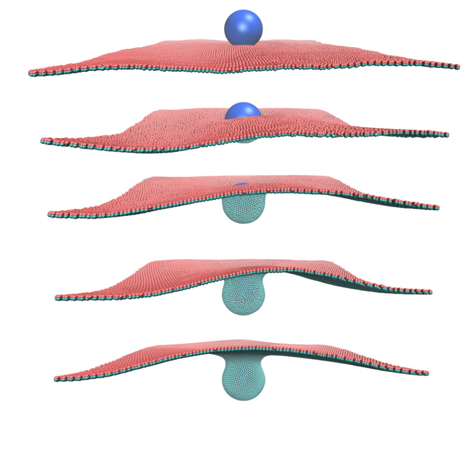
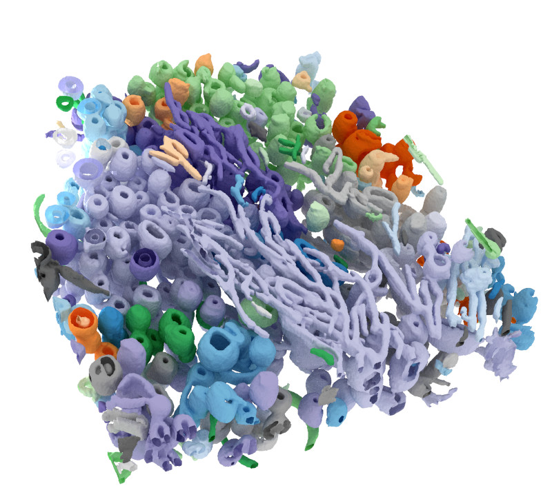

Research
Coarse-grained model of human cytomegalovirus
In a recent collaboration, I helped researchers from Prof. Fan Liu's lab to build a comprehensive model of the human cytomegalovirus (HCMV) particles.
We used information from quantitative proteomics as well as cross-linking mass spectrometry to model a wide range of viral and host proteins inside the virion.
Models of glycoproteins (shown in red in the image) as well as the capsid (blue-green particles in the image) are built from cryoEM and/or AlphaFold2 predictions.
The model is published as part of this Nature Microbiology paper.

Sectioned view of the coarse-grained model of the HCMV.
Particle-based modeling of membranes
My main research focus has been on modeling membrane-involved biological processes.
As my main simulation tool, I have developed a highly coarse-grained model of bilayer membranes.
This model mimics the mechanics of the membrane via bonded interactions, with a force field optimized against the curvature elasticity of the membrane.
Additionally, I developed a hydrodynamics method for anisotropically coupling the membrane particles to the surrounding fluid environment.
The combinaiton of this membrane model and the hydrodynamic coupling procedure constitutes this Nature Communications paper.
You can see the model in action by checking this Simularium visualization from the Allen Institute.
Additionally, I have used "force field masking" to incorporate membrane-bending peripheral proteins in the model (blue particles in the movie).
Aggregation of membrane-bending peripheral proteins on the membrane due to implicit membrane-mediated interactions.

Endocytosis of a spherical nanoparticle: nanoparticle is being wrapped by the fluid membrane as result of surface adhesion.
Deep-SXT
I developed a software for deep learning-based segmentation and 3D reconstruction of cryo-soft x-ray tomograms.
The software is freely available (with an MIT license) from the github repository github.com/noegroup/deep_sxt.

Surface reconstruction of a cryo-soft x-ray tomogram using deep learning.
Misc. Projects
In-Browser Molecular Dynamics (IBMD)
This is a hobby project of mine from 2014. I implemented a JavaScript-based molecular dynamics code that runs in your browser and has a graphical output of the trajectory
as well as numerical and plot outputs of thermodynamic properties such as pressure. All outputs are in sync and reflect the current state of the simulation. In some cases,
the simulation can be tweaked by changing the setpoint temperature or pressure, and particles can be added or removed from the simulation box by simply clicking on it.
Check it out here: In-Browser Molecular Dynamics (IBMD) .